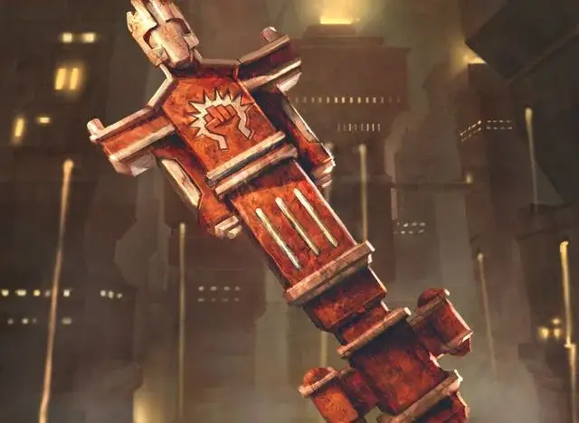

Рунный ключ Бороса
Boros Keyrune
Чудесный предмет, редкий (требуется настройка членом Гильдии Бороса)

Рекомендованная стоимость 501-5 000 зм
Вырезанный из красного песчаника с элементами белого гранита, чтобы напоминать члена Легиона Бороса, этот рунный ключ может превратиться в ветерана [veteran] (человека) на 8 часов. Помимо сражения от вашего имени, этот ветеран активно даёт тактические советы, которые обычно звучат здраво. Любой, кто разговаривает с трансформированным рунным ключем или внимательно изучает его, может легко распознать, что это не настоящий человек.
Действием, вы можете произнести командное слово и поместить рунный ключ на землю в свободное пространство в пределах 5 футов от вас, рунный ключ превращается в ветерана (человека). Если для ветерана недостаточно места, рунный ключ не трансформируется.
Существо дружелюбно относится к вам, вашим союзникам и другим членам вашей гильдии (если только эти члены гильдии не враждебны к вам). Он понимает ваши языки и подчиняется вашим устным командам. Если вы не отдаете никаких команд, ветеран совершает действие Уклонения и перемещается, чтобы избегать опасности.
По истечении 8 часов ветеран возвращается в свою форму рунного ключа. Он возвращается в неё раньше, если его хиты опускаются до 0 хитов или если вы используете Действие, чтобы снова произнести командное слово, прикасаясь к нему. Когда существо возвращается к своей форме рунного ключа, оно не может трансформироваться снова, пока не пройдет 36 часов.